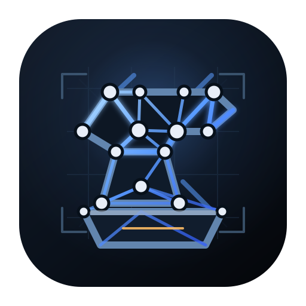

SVG only experiment
Forge
A compact app-icon mark where the anvil itself is made from mesh material: graph nodes, blueprint struts, and harness geometry that keep an LLM-oriented build system production-ready from day 0.
#070B12
#E8EEF8
#5A9CFF
#FF6A3D